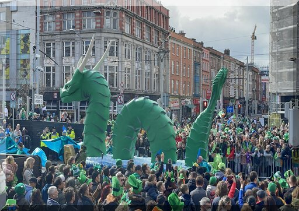
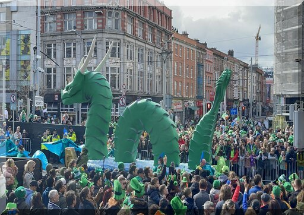
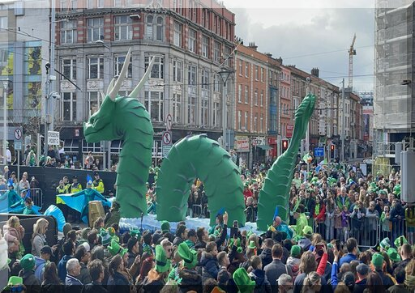
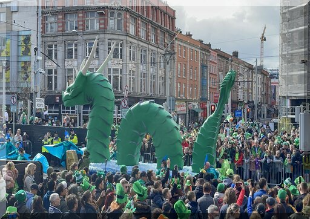
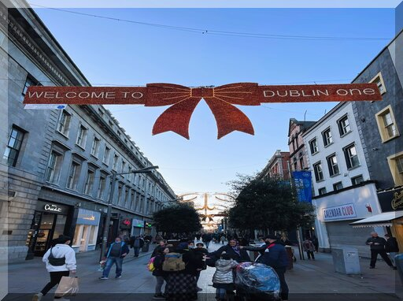
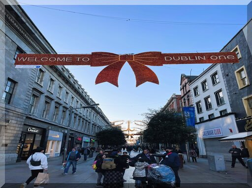
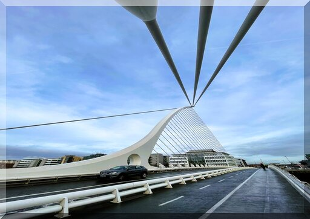
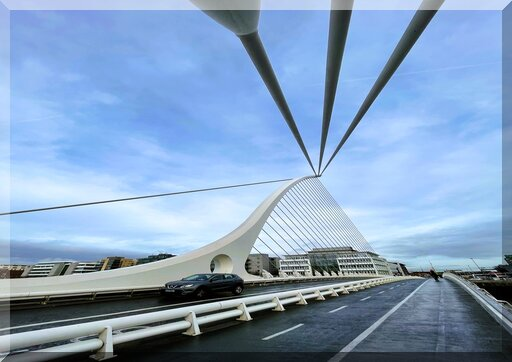

Irelands biggest festival of the year, held on the 17th March in the heart of the capital city Dublin. St. Patricks day also known as “St.Paddy’s” commemorates Saint Patrick and the arrival of Christianity in Ireland which celebrates the heritage and culture of Ireland. The festival is involving public parades and gathering of up to 500,000 people, to celebrate the most exciting day of the year with traditional Irish music and dancing. On this special day, it is common with the wearing of green attire or shamrocks for symbolism. The city centre at Parnell street is the gathering point for the parade and the march of bands along with the military, fire bigrade and many more. Leaf tours offers front row seats in the VIP section, don’t miss out on the Parade! (Only Available During St.Patricks week)
Located in O’Connell Street, the SPIRE of Dublin also known as the monument of light, is one of Dublin’s greatest forms of architecture. Standing upright at an amazing 120 meters, this flawless piece of art was designed by Ian Ritchie Architect with the reflective surface that is softly lit by the ambient lighting of the street scape. Surrounded by rows of shops and bars for enjoy the view and snap a couple of photos, the SPIRE is worth a beautiful afternoon viewing with a nice cup of coffee or a cold beer. Our team offers a full day tour around the city centre and a special photo with our in-house photographer of yourself in front of this amazing monument!
 

 

The Samuel Beckett Bridge crosses over the River Liffey on the south side, with the overall cost of €60 million the bridge was built in an image of an harp lying on its edge. Supported by 31 cables, this bridge is capable of opening trough a 90-degree angle allowing ships to pass through. Despite the great view on the skyline the Samuel Beckett bridge is a wonderful place for a trendy photoshoot. Leaf tours offers a great walk around the city and final stop off at the bridge.